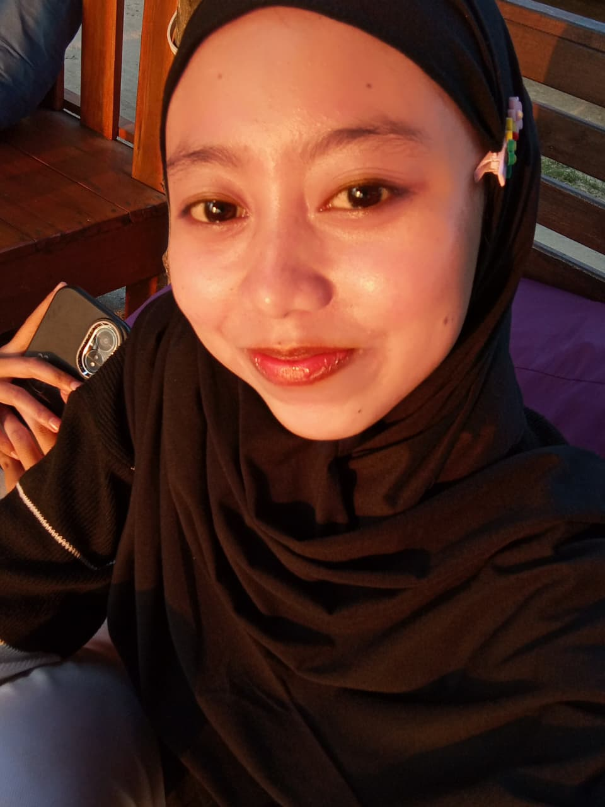

before this scrapbook ends
✿
A LITTLE SURPRISE FOR YOU
Sebelum membuka scrapbookini, sepertinya ada sesuatu yang perlu kamu temukan di dasar laut...
YOU FOUND A LITTLE TREASURE
katanya ada lagu yang mbak lis suka, coba klik tombol di bawah ini ya.
a scrapbook made with proud
mbak lis
Padahal untuk sampai di hari ini bukan perjalanan yang mudah, maka dari itu kamu harus bangga dengan dirimu sendiri. ♡
keep going, keep growing, and be proud of yourself
a little note before we begin
haii, mbak lis! akhirnya sampai juga di sini 😭
aku bikin scrapbook ini buat menyimpan sedikit kenangan, cerita, dan hal-hal yang mungkin pernah kita lewati bareng di pondok.
dari sibuk ngurusin adek-adek, jadi andalan kalau ada kegiatan dan acara, sampai capek bareng yang dulu rasanya pengin cepat selesai. eh, sekarang malah jadi kenangan. ♡
udah, daripada makin mellow, yuk buka halaman berikutnya! 🌷
a scrapbook, a lot of memories ♡
pressed flowers & salty air
Every little moment has a place here ♡
a letter from the heart
Untuk kamu yang sudah berjalan sejauh ini, terima kasih karena sudah berusaha, bahkan pada hari-hari ketika semuanya terasa tidak mudah.
Semoga setelah semua hal yang kamu lewati, hidup memberimu lebih banyak alasan untuk tersenyum, lebih banyak tempat untuk pulang, dan lebih banyak hari yang terasa ringan.
Kamu tidak harus selalu kuat setiap waktu. Pelan-pelan juga tidak apa-apa. Semoga kamu selalu menemukan hal-hal kecil yang membuatmu ingin terus melangkah. ♡
with proud, always ♡
little songs, little feelings
some songs that I want you to hear ♡
beberapa lagu kecil yang semoga bisa menemani hari-hari Mbak Lis ♡
NOW PLAYING
pilih kaset dan nikmati musiknya ♡
♡ KOLEKSI KASET
♫ Menari-nari semoga selalu ada alasan untuk tersenyum, bahkan di hari yang melelahkan ▶ ♫ Panasea coba dengarkan baik-baik, barangkali ada cerita yang ingin disampaikan lewat liriknya ▶ ♫ Bernaung semoga selalu ada tempat untuk pulang saat dunia terasa terlalu riuh ▶ ♫ Sampai Jadi Debu tentang waktu, kenangan, dan hal-hal yang ingin tetap kita kenang ▶mungkin nanti akan ada lebih banyak lagu, sebab selalu ada cerita yang ingin dibagikan ♡
tiny things, precious memories
never forget us, mbak lis... ♡
words I want you to remember
Ada banyak hal yang mungkin belum sempat disampaikan, banyak cerita yang masih tersimpan, dan banyak doa baik yang diam-diam menyertai.
Semoga kamu selalu punya alasan untuk tersenyum, keberanian untuk memulai lagi, dan hati yang cukup lapang untuk menikmati setiap proses.
a little game for you ♡
Mbak Lis, sebelum lanjut ke halaman berikutnya, ada tantangan kecil nih! Wkwk. Coba temukan semua pasangan kartu yang cocok. Siapa tahu ada kejutan kecil dan pesan dariku di balik kartu-kartunya. Yuk, coba dulu! Jangan sampai kalah, yaa. WKWK ♡ Have fun, Mbak Lis! ♡
keep being you, Mbak Lis ♡
a gentle reminder for you
“sudah mau berjuang untuk takdirmu saja, itu sudah lebih dari cukup”
kabar baiknya, ditahun ini kamu sudah memilih untuk bertahan, memilih untuk tidak menyerah pada keadaan, dan kuucapkan selamat atas perjuangan gilamu.
rest a little, you've done enough ♡

SEDIKIT PESAN UNTUKMU
Ada beberapa hal yang ingin aku sampaikan. Barangkali bisa kamu ingat lagi saat hari-hari terasa berat.
𓇼 ✧ ♡ ✧ 𓇼Lihat, senyummu masih saja seindah itu. Mungkin nggak semua orang tahu apa saja yang sudah kamu lewati untuk sampai di titik ini. Tapi aku harap kamu tahu, kamu sudah berjalan sejauh ini dan itu bukan hal yang sederhana.
Aku tahu, ada hari-hari ketika kamu harus menguatkan dirimu sendiri. Ada banyak hal yang mungkin nggak sempat kamu ceritakan kepada siapa pun. Jadi, kalau suatu saat kamu merasa lelah, nggak apa-apa untuk beristirahat. Kamu nggak harus selalu terlihat kuat.
Aku harap kamu nggak terlalu keras sama dirimu sendiri. Nggak semua hal harus selesai hari ini, dan nggak semua harapan harus terwujud sekarang. Pelan-pelan saja, ya. Aku percaya setiap langkah kecilmu tetap berarti.
Semoga setelah perjalanan panjang yang sudah kamu lewati, akan ada lebih banyak hal baik yang datang menghampirimu. Semoga hidup lebih sering memberimu alasan untuk tersenyum. Kamu pantas bahagia, Mbak Lis, tanpa harus selalu melewati hal-hal sulit terlebih dahulu.
SECUIL PESAN DARI LAUT
Di suatu sudut lautan kecil ini, ada lima pesan yang sedang menunggumu untuk ditemukan.
𓇼 ✧ 🐚 ✧ 𓇼✧ Tap each little bottle to discover its message ✧
SOMEWHERE BEYOND THE OCEAN
Even in the deepest blue, there are little lights waiting to be discovered.
✦ ⋆ ☾ ⋆ ✦✨ Ada 7 bintang yang menunggu untuk dinyalakan.
Mulai dari bintang nomor 1, lalu ikuti urutannya sampai nomor 7.
Jawab setiap pertanyaan untuk menyalakan bintangnya, ya!
0 dari 7 bintang sudah menyala
Mbak Lis, coba putar HP-nya ke samping dulu, yaa.
Biar taman kecilnya kelihatan lebih luas 🌷A LITTLE GARDEN GAME
Grow your own little garden, one flower at a time.
Pot 1
💧 Belum disiram
☀️ Belum kena matahari
Belum ada benih nih
Pot 2
💧 Belum disiram
☀️ Belum kena matahari
Belum ada benih nih
Pot 3
💧 Belum disiram
☀️ Belum kena matahari
Belum ada benih nih
Choose your seeds and start planting!
Geser ikon 💧 Air atau ☀️ Matahari ke pot bunga untuk membantu tanamanmu tumbuh.
A LITTLE FLOWER FOR YOU
Your little message will be written here...
with care, always ♡A MESSAGE FROM THE SEA
Your message will be written here...
with a little warmth ♡A LITTLE WORLD QUIZ 🌍
Ada 15 negara yang harus kamu tebak. Tenang, nggak perlu paspor. Cukup modal otak! 😂
Pilih salah satu petunjuk untuk mulai bermain!
Paspor boleh kosong, tapi jawabanmu penuh prestasi! 😂
before this scrapbook ends
Sebelum bukunya ditutup, aku mau tahu sedikit tentang apa yang kamu rasakan. Kalau sudah siap, boleh cerita di sini, yaa.
made with care, just for you ♡